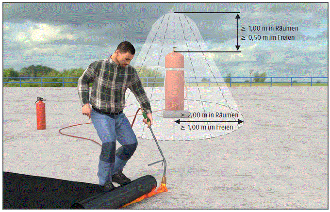
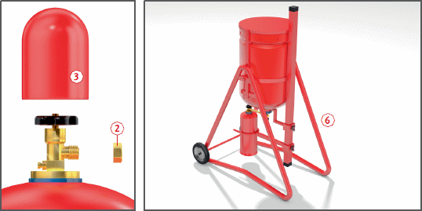
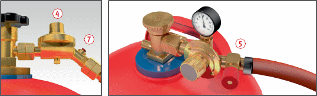

Besonders zweckmäßig: Regelgeräte mit einstellbarem Ausgangsdruck
 .
. Ausnahme: Füllen von Kleinstflaschen (0,425 kg) in Füllständern
 .
.
Flüssiggasanlagen |

. . .
. und der Verschlussmutter
und der Verschlussmutter  sichern. Dies gilt auch für entleerte Flaschen.
sichern. Dies gilt auch für entleerte Flaschen.

 erforderlich, die unmittelbar hinter dem Druckregelgerät anzubringen sind.
erforderlich, die unmittelbar hinter dem Druckregelgerät anzubringen sind. statt Schlauchbruchsicherungen verwendet werden.
statt Schlauchbruchsicherungen verwendet werden.| 1 Prüffristen nach Betriebssicherheitsverordnung | ||
| Flüssiggasanlage | Wiederkehrende Prüfung | durch wen? |
| Aufstellung, Dichtheit | tägliche Kontrolle | Fachkundiger (Benutzer) § 2 (5) BetrSichV |
| gesamte Anlage | jährliche Prüfung | "zur Prüfung befähigte Person" § 2 (6) BetrSichV |
07/2019